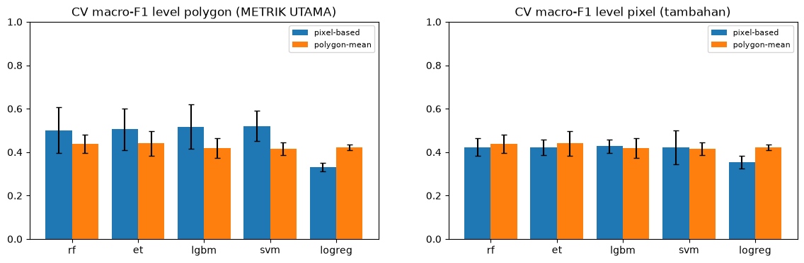
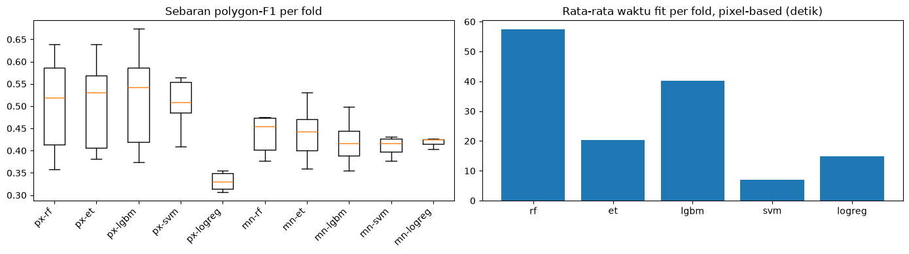
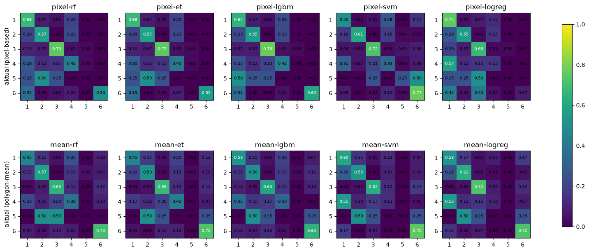
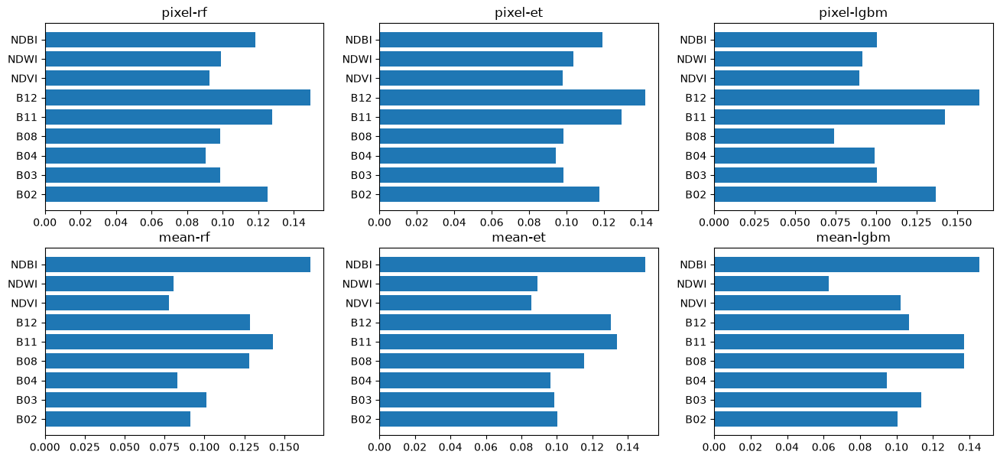

BAB 4 — Modeling#
Eksperimen pixel-based vs polygon-mean#
4.1 Mulai dari hasil Tahap 3#
Pertanyaan: apa yang masuk ke eksperimen (polygon, pixel, feature, yang dibuang)? CSV dibaca, bukan dihitung ulang.
# DATA AKTUAL PROJECT — 4.1 muat artefak Tahap 3 + verifikasi integritas.
import pandas as pd
FEATS = ["B02", "B03", "B04", "B08", "B11", "B12", "NDVI", "NDWI", "NDBI"]
MEANMAP = {f"mean_{b}": b for b in ["B02", "B03", "B04", "B08", "B11", "B12"]}
trp = pd.read_csv("../outputs/tables/training_pixel.csv")
tep = pd.read_csv("../outputs/tables/testing_pixel.csv")
trm = pd.read_csv("../outputs/tables/training_mean.csv")
tem = pd.read_csv("../outputs/tables/testing_mean.csv")
sp = pd.read_csv("../outputs/tables/polygon_split.csv")
exc = pd.read_csv("../outputs/tables/polygon_excluded.csv")
print(f"DATA AKTUAL PROJECT: train_pixel={len(trp)} test_pixel={len(tep)} train_mean={len(trm)} test_mean={len(tem)}")
print(f"DATA AKTUAL PROJECT: polygon train={int((sp['split'] == 'train').sum())} test={int((sp['split'] == 'test').sum())}")
print(f"DATA AKTUAL PROJECT: NaN train_pixel={int(trp[FEATS].isna().sum().sum())} (terbuang bila >0)")
trp = trp.dropna(subset=FEATS).reset_index(drop=True)
print(f"DATA AKTUAL PROJECT: feature_urut = {FEATS}")
print(f"DATA AKTUAL PROJECT: dibuang total={len(exc)} (tidak_valid={int((exc['kategori'] == 'tidak valid').sum())}, kuota={int((exc['kategori'] != 'tidak valid').sum())})")
print(f"DATA AKTUAL PROJECT: irisan FID train-test = {sorted(set(sp[sp['split'] == 'train']['fid']) & set(sp[sp['split'] == 'test']['fid']))}")
DATA AKTUAL PROJECT: train_pixel=40076 test_pixel=11432 train_mean=204 test_mean=52
DATA AKTUAL PROJECT: polygon train=204 test=52
DATA AKTUAL PROJECT: NaN train_pixel=0 (terbuang bila >0)
DATA AKTUAL PROJECT: feature_urut = ['B02', 'B03', 'B04', 'B08', 'B11', 'B12', 'NDVI', 'NDWI', 'NDBI']
DATA AKTUAL PROJECT: dibuang total=2567 (tidak_valid=2055, kuota=512)
DATA AKTUAL PROJECT: irisan FID train-test = []
Interpretasi 4.1: masuk eksperimen: train 40.076 pixel / 204 mean; test 11.432 / 52; 204/52 polygon; NaN 0; 2.567 polygon dibuang; irisan FID train-test kosong — syarat perlakuan setara terpenuhi.
4.2 Konsep model (penjelasan dulu, baru kode)#
Alur: vektor feature 9 angka → satu decision tree (aturan ambang berurutan, mis. NIR tinggi + merah rendah cenderung vegetasi) → banyak tree dari bootstrap + subset fitur acak (bagging) → voting mayoritas → satu class_id.
CONTOH ILUSTRASI KONSEP (data mainan, bukan data project):
pixel -> [tree1: Sawah] [tree2: Sawah] [tree3: Lahan hijau] -> voting 2-1 -> Sawah
Ilustrasi di atas hanya konsep 3 tree; contoh nyata di sel berikutnya memakai 5 tree dan kelima suara jatuh ke kelas 1.
Kartu model (netral; kelebihan/kekurangan singkat)#
Model |
Cara kerja |
Cenderung kuat saat |
Keterbatasan |
|---|---|---|---|
Random Forest (RF) |
Bagging tree + subset fitur, voting |
Fitur heterogen, tahan noise |
Ratusan tree bisa lambat; dominasi kelas besar |
ExtraTrees (ET) |
Seperti RF, ambang split lebih acak |
Biasanya lebih cepat, variansi rendah |
Bisa bias tinggi bila terlalu acak |
LightGBM |
Boosting histogram leaf-wise |
Cepat, data sedang-besar |
Sensitif pada data sangat kecil ( dipakai dengan daun terbatas) |
SVM RBF |
Batas non-linear margin-maksimum |
Dimensi sedang, perlu scaling |
Mahal pada puluhan ribu sample → subsample training |
Logistic Regression |
Linear + softmax (baseline) |
Cepat, tolok ukur |
Batas linear saja |
# CONTOH ILUSTRASI — bukan data project: voting RF pada 12 baris mainan.
import numpy as np
from sklearn.ensemble import RandomForestClassifier
Xtoy = np.array([[1, 9], [2, 8], [1, 8], [2, 9], [8, 2], [9, 1], [8, 1], [9, 2], [5, 5], [4, 6], [6, 4], [5, 4]])
ytoy = np.array([1, 1, 1, 1, 2, 2, 2, 2, 3, 3, 3, 3]) # 1/2/3 = label mainan
toy = RandomForestClassifier(n_estimators=5, random_state=42).fit(Xtoy, ytoy)
raw = [t.predict([[2, 9]])[0] for t in toy.estimators_]
v = [int(toy.classes_[int(r)]) for r in raw] # tree mengembalikan kode internal; dipetakan ke label
print(f"CONTOH ILUSTRASI: suara tree = {v} -> prediksi = {toy.predict([[2, 9]])[0]} (aturan mainan, bukan project)")
CONTOH ILUSTRASI: suara tree = [1, 1, 1, 1, 1] -> prediksi = 1 (aturan mainan, bukan project)
4.3 Matriks eksperimen (perlakuan setara)#
Metode |
Model |
Split/Fitur |
Tuning |
Catatan |
|---|---|---|---|---|
pixel-based |
RF, ExtraTrees, LightGBM, SVM-RBF, LogReg |
FID train sama, 9 feature sama |
StratifiedGroupKFold(5), group=FID |
SVM/LogReg via pipeline scaler fit-per-fold; SVM train subsample 8.861 |
polygon-mean |
RF, ExtraTrees, LightGBM, SVM-RBF, LogReg |
FID train sama, 9 feature sama |
StratifiedGroupKFold(4), group=FID (Laut hanya 4 train polygon) |
SVM tanpa subsample (204 baris); scaler sama |
Ruang grid kecil dan sebanding (4/4/4/2/2 kombinasi). Subsample HANYA training, stratified seed 42, dilaporkan. Waktu training dicatat per model.
4.4 Ukuran CV(Cross Validation) — ditetapkan SEBELUM melihat hasil#
Metrik pemilihan utama: macro-F1 level polygon dari CV. Pixel-based: prediksi pixel divoting mayoritas per FID (seri → class_id terkecil, deterministik), lalu F1-macro antar polygon. Polygon-mean: langsung dari 1 baris per polygon. Pixel-F1 dilaporkan sebagai tambahan. Dilaporkan mean ± std antar fold. Fold kecil (204 polygon train / 5 → ±40 polygon per validasi) — selisih kecil tidak diklaim bermakna.
# Mesin CV bersama (dipakai kedua metode; agregasi polygon didokumentasikan di 4.4).
import time
import numpy as np
from sklearn.metrics import f1_score
from sklearn.model_selection import StratifiedGroupKFold
N_SPLITS = 5
def polygon_vote_f1(y_true_px, y_pred_px, groups):
df = __import__("pandas").DataFrame({"g": groups, "t": y_true_px, "p": y_pred_px})
yt, yp = [], []
for _, s in df.groupby("g"):
yt.append(s["t"].iloc[0])
vals, cnt = np.unique(s["p"].values, return_counts=True)
yp.append(int(vals[np.argmax(cnt)])) # seri -> class_id terkecil (np.unique terurut)
return float(f1_score(yt, yp, average="macro", zero_division=0)), list(zip(yt, yp))
def run_cv(builder, X, y, groups, param_list, use_groups=True):
cv = StratifiedGroupKFold(n_splits=N_SPLITS)
recs, oof = [], {}
for pi, params in enumerate(param_list):
fpix, fpol, oof_pairs = [], [], []
for fold, (tri, vai) in enumerate(cv.split(X, y, groups)):
est = builder(params)
t0 = time.time()
est.fit(X[tri], y[tri])
dt = time.time() - t0
pv = est.predict(X[vai])
fpix.append(float(f1_score(y[vai], pv, average="macro", zero_division=0)))
f1p, pairs = polygon_vote_f1(y[vai], pv, groups[vai])
fpol.append(f1p)
oof_pairs += [(int(a), int(b)) for a, b in pairs]
recs.append({"params": str(params), "fold": fold, "pixel_f1": fpix[-1], "polygon_f1": fpol[-1], "fit_s": round(dt, 1)})
oof[pi] = {"params": params, "mean_polygon_f1": float(np.mean(fpol)), "std_polygon_f1": float(np.std(fpol)),
"mean_pixel_f1": float(np.mean(fpix)), "pairs": oof_pairs}
best = max(oof, key=lambda k: oof[k]["mean_polygon_f1"])
return recs, oof, best
# DATA AKTUAL PROJECT — 4.3a eksperimen pixel-based (40.076 baris train).
import os
import time
import joblib
import numpy as np
import pandas as pd
from IPython.display import display, HTML
from lightgbm import LGBMClassifier
from sklearn.ensemble import ExtraTreesClassifier, RandomForestClassifier
from sklearn.linear_model import LogisticRegression
from sklearn.pipeline import make_pipeline
from sklearn.preprocessing import StandardScaler
from sklearn.svm import SVC
# KONFIGURASI
RANDOM_STATE = 42
os.makedirs("../outputs/models", exist_ok=True)
os.makedirs("../outputs/tables", exist_ok=True)
# DATA
X = trp[FEATS].to_numpy()
y = trp["class_id"].to_numpy()
gr = trp["fid"].to_numpy()
print(f"DATA AKTUAL PROJECT: pixel train n={len(X)} fitur={X.shape[1]} groups={len(np.unique(gr))}")
# SUBSAMPLE SVM (training saja, stratified, seed 42)
rng = np.random.RandomState(RANDOM_STATE)
idx8k = np.concatenate([
rng.choice(np.where(y == c)[0],
size=min(8000 // 6 + 200, int((y == c).sum())),
replace=False)
for c in [1, 2, 3, 4, 5, 6]
])
rng.shuffle(idx8k)
print(f"DATA AKTUAL PROJECT: subsample SVM {len(X)} -> {len(idx8k)} (aturan: stratified per kelas, seed 42)")
# DEFINISI MODEL
MODELS = {
"rf": (
lambda p: RandomForestClassifier(
n_estimators=300, max_depth=p[0], min_samples_leaf=p[1],
random_state=RANDOM_STATE, n_jobs=-1),
[(None, 1), (None, 2), (25, 1), (25, 2)],
),
"et": (
lambda p: ExtraTreesClassifier(
n_estimators=300, max_depth=p[0], min_samples_leaf=p[1],
random_state=RANDOM_STATE, n_jobs=-1),
[(None, 1), (None, 2), (25, 1), (25, 2)],
),
"lgbm": (
lambda p: LGBMClassifier(
n_estimators=300, learning_rate=p[0], num_leaves=p[1],
random_state=RANDOM_STATE, verbose=-1),
[(0.05, 31), (0.05, 63), (0.1, 31), (0.1, 63)],
),
"svm": (
lambda p: make_pipeline(
StandardScaler(),
SVC(C=p["C"], kernel="rbf", gamma="scale", random_state=RANDOM_STATE)),
[1, 10],
),
"logreg": (
lambda p: make_pipeline(
StandardScaler(),
LogisticRegression(C=p["C"], max_iter=2000, random_state=RANDOM_STATE)),
[0.5, 2.0],
),
}
# JALANKAN CV + REFIT
RES = {}
for name, (builder, grid) in MODELS.items():
if name == "svm":
recs, oof, best = run_cv(builder, X[idx8k], y[idx8k], gr[idx8k],
[{"C": c} for c in grid])
X_fit, y_fit = X[idx8k], y[idx8k]
best_params = oof[best]["params"]
elif name == "logreg":
recs, oof, best = run_cv(builder, X, y, gr,
[{"C": c} for c in grid])
X_fit, y_fit = X, y
best_params = oof[best]["params"]
else:
recs, oof, best = run_cv(builder, X, y, gr, grid)
X_fit, y_fit = X, y
best_params = oof[best]["params"]
t0 = time.time()
if name in ("svm", "logreg"):
final = builder(best_params)
else:
final = builder(best_params)
final.fit(X_fit, y_fit)
dt = time.time() - t0
joblib.dump(final, f"../outputs/models/pixel_{name}.pkl")
RES[name] = {
"best": oof[best],
"recs": recs,
"refit_s": round(dt, 1),
"n_train": int(len(X_fit)),
}
print(f"DATA AKTUAL PROJECT: pixel-{name} best={best_params} "
f"polygonF1={oof[best]['mean_polygon_f1']:.3f}±{oof[best]['std_polygon_f1']:.3f} "
f"refit_s={dt:.0f}")
# SIMPAN CV CSV
cv_path = "../outputs/tables/cv_pixel.csv"
pd.DataFrame([{"model": m, **r} for m in RES for r in RES[m]["recs"]]).to_csv(cv_path, index=False)
print(f"DATA AKTUAL PROJECT: tersimpan {cv_path} + 5 model pixel_*.pkl")
# TABEL 1 — Ringkasan model
rows = []
for m, v in RES.items():
b = v["best"]
rows.append({
"Model": m,
"Best params": str(b["params"]),
"Polygon F1 (mean)": f"{b['mean_polygon_f1']:.3f}",
"Polygon F1 (std)": f"{b['std_polygon_f1']:.3f}",
"n_train": f"{v['n_train']:,}",
"Refit (s)": f"{v['refit_s']:.0f}",
})
tab1 = pd.DataFrame(rows).sort_values("Polygon F1 (mean)", ascending=False)
print("\nTABEL 1 — Ringkasan model pixel-based")
display(HTML(tab1.to_html(index=False, justify="left", border=1)))
# TABEL 2 — Semua konfigurasi yang diuji (agregasi per model x params)
det_rows = []
for m, v in RES.items():
recs = pd.DataFrame(v.get("recs", []))
for prm, grp in recs.groupby("params", sort=False):
det_rows.append({
"Model": m,
"Params": str(prm),
"Polygon F1 (mean)": f"{grp['polygon_f1'].mean():.3f}",
"Polygon F1 (std)": f"{np.std(grp['polygon_f1'].to_numpy(), ddof=0):.3f}",
"n_fold": int(grp["polygon_f1"].count()),
})
tab2 = pd.DataFrame(det_rows)
if tab2.empty:
print("\nTABEL 2 — tidak ada detail konfigurasi")
else:
print("\nTABEL 2 — Semua konfigurasi yang diuji")
display(HTML(tab2.to_html(index=False, justify="left", border=1)))
# TABEL 3 — Model tersimpan
model_files = sorted(f for f in os.listdir("../outputs/models") if f.startswith("pixel_"))
tab3 = pd.DataFrame({
"File": model_files,
"Ukuran (KB)": [
f"{os.path.getsize(os.path.join('../outputs/models', f)) / 1024:.0f}"
for f in model_files
],
})
print("\nTABEL 3 — Model tersimpan")
display(HTML(tab3.to_html(index=False, justify="left", border=1)))
DATA AKTUAL PROJECT: pixel train n=40076 fitur=9 groups=204
DATA AKTUAL PROJECT: subsample SVM 40076 -> 8861 (aturan: stratified per kelas, seed 42)
DATA AKTUAL PROJECT: pixel-rf best=(25, 1) polygonF1=0.507±0.106 refit_s=93
DATA AKTUAL PROJECT: pixel-et best=(None, 1) polygonF1=0.513±0.097 refit_s=30
DATA AKTUAL PROJECT: pixel-lgbm best=(0.1, 31) polygonF1=0.522±0.110 refit_s=27
DATA AKTUAL PROJECT: pixel-svm best={'C': 1} polygonF1=0.537±0.072 refit_s=12
DATA AKTUAL PROJECT: pixel-logreg best={'C': 2.0} polygonF1=0.335±0.018 refit_s=16
DATA AKTUAL PROJECT: tersimpan ../outputs/tables/cv_pixel.csv + 5 model pixel_*.pkl
TABEL 1 — Ringkasan model pixel-based
| Model | Best params | Polygon F1 (mean) | Polygon F1 (std) | n_train | Refit (s) |
|---|---|---|---|---|---|
| svm | {'C': 1} | 0.537 | 0.072 | 8,861 | 12 |
| lgbm | (0.1, 31) | 0.522 | 0.110 | 40,076 | 27 |
| et | (None, 1) | 0.513 | 0.097 | 40,076 | 30 |
| rf | (25, 1) | 0.507 | 0.106 | 40,076 | 93 |
| logreg | {'C': 2.0} | 0.335 | 0.018 | 40,076 | 16 |
TABEL 2 — Semua konfigurasi yang diuji
| Model | Params | Polygon F1 (mean) | Polygon F1 (std) | n_fold |
|---|---|---|---|---|
| rf | (None, 1) | 0.503 | 0.098 | 5 |
| rf | (None, 2) | 0.493 | 0.098 | 5 |
| rf | (25, 1) | 0.507 | 0.106 | 5 |
| rf | (25, 2) | 0.503 | 0.103 | 5 |
| et | (None, 1) | 0.513 | 0.097 | 5 |
| et | (None, 2) | 0.510 | 0.092 | 5 |
| et | (25, 1) | 0.505 | 0.090 | 5 |
| et | (25, 2) | 0.491 | 0.088 | 5 |
| lgbm | (0.05, 31) | 0.517 | 0.105 | 5 |
| lgbm | (0.05, 63) | 0.518 | 0.086 | 5 |
| lgbm | (0.1, 31) | 0.522 | 0.110 | 5 |
| lgbm | (0.1, 63) | 0.510 | 0.097 | 5 |
| svm | {'C': 1} | 0.537 | 0.072 | 5 |
| svm | {'C': 10} | 0.504 | 0.058 | 5 |
| logreg | {'C': 0.5} | 0.326 | 0.016 | 5 |
| logreg | {'C': 2.0} | 0.335 | 0.018 | 5 |
TABEL 3 — Model tersimpan
| File | Ukuran (KB) |
|---|---|
| pixel_et.pkl | 1281880 |
| pixel_lgbm.pkl | 6002 |
| pixel_logreg.pkl | 2 |
| pixel_rf.pkl | 484353 |
| pixel_svm.pkl | 1109 |
import inspect
print(inspect.signature(run_cv))
(builder, X, y, groups, param_list, use_groups=True)
import inspect
print(inspect.getsource(run_cv))
def run_cv(builder, X, y, groups, param_list, use_groups=True):
cv = StratifiedGroupKFold(n_splits=N_SPLITS)
recs, oof = [], {}
for pi, params in enumerate(param_list):
fpix, fpol, oof_pairs = [], [], []
for fold, (tri, vai) in enumerate(cv.split(X, y, groups)):
est = builder(params)
t0 = time.time()
est.fit(X[tri], y[tri])
dt = time.time() - t0
pv = est.predict(X[vai])
fpix.append(float(f1_score(y[vai], pv, average="macro", zero_division=0)))
f1p, pairs = polygon_vote_f1(y[vai], pv, groups[vai])
fpol.append(f1p)
oof_pairs += [(int(a), int(b)) for a, b in pairs]
recs.append({"params": str(params), "fold": fold, "pixel_f1": fpix[-1], "polygon_f1": fpol[-1], "fit_s": round(dt, 1)})
oof[pi] = {"params": params, "mean_polygon_f1": float(np.mean(fpol)), "std_polygon_f1": float(np.std(fpol)),
"mean_pixel_f1": float(np.mean(fpix)), "pairs": oof_pairs}
best = max(oof, key=lambda k: oof[k]["mean_polygon_f1"])
return recs, oof, best
# DATA AKTUAL PROJECT — 4.3b eksperimen polygon-mean (204 baris train).
import os
import time
import joblib
import numpy as np
import pandas as pd
from IPython.display import display, HTML
from sklearn.metrics import f1_score
from sklearn.model_selection import StratifiedGroupKFold
os.makedirs("../outputs/models", exist_ok=True)
os.makedirs("../outputs/tables", exist_ok=True)
# PASTIKAN KOLOM NDVI/NDWI/NDBI ADA
if not {"NDVI", "NDWI", "NDBI"}.issubset(trm.columns):
trm["NDVI"] = (trm["mean_B08"] - trm["mean_B04"]) / (trm["mean_B08"] + trm["mean_B04"])
trm["NDWI"] = (trm["mean_B03"] - trm["mean_B08"]) / (trm["mean_B03"] + trm["mean_B08"])
trm["NDBI"] = (trm["mean_B11"] - trm["mean_B08"]) / (trm["mean_B11"] + trm["mean_B08"])
FEATM = [f"mean_{b}" for b in ["B02", "B03", "B04", "B08", "B11", "B12"]] + ["NDVI", "NDWI", "NDBI"]
Xm = trm[FEATM].to_numpy()
ym = trm["class_id"].to_numpy()
gm_ = trm["fid"].to_numpy()
# HITUNG N_SPLITS OTOMATIS DARI KELAS MINORITAS
vc = pd.Series(ym).value_counts()
n_min = int(vc.min())
N_SPLITS_AUTO = max(2, min(5, n_min))
print(f"DATA AKTUAL PROJECT: mean train n={len(Xm)} fitur={Xm.shape[1]} groups={len(np.unique(gm_))}")
print(f"DATA AKTUAL PROJECT: distribusi kelas min={n_min}, N_SPLITS dipakai={N_SPLITS_AUTO}")
if N_SPLITS_AUTO < 5:
print(f"DATA AKTUAL PROJECT: catatan — N_SPLITS diturunkan dari 5 ke {N_SPLITS_AUTO} "
f"karena kelas minoritas hanya {n_min} sampel")
# OVERRIDE run_cv DENGAN VERSI AUTO N_SPLITS
def run_cv(builder, X, y, groups, param_list, use_groups=True):
# Hitung n_splits dari kelas minoritas
vc_local = pd.Series(y).value_counts()
n_min_local = int(vc_local.min())
n_splits = max(2, min(N_SPLITS_AUTO, n_min_local))
cv = StratifiedGroupKFold(n_splits=n_splits)
recs, oof = [], {}
for pi, params in enumerate(param_list):
fpix, fpol, oof_pairs = [], [], []
for fold, (tri, vai) in enumerate(cv.split(X, y, groups)):
est = builder(params)
t0 = time.time()
est.fit(X[tri], y[tri])
dt = time.time() - t0
pv = est.predict(X[vai])
fpix.append(float(f1_score(y[vai], pv, average="macro", zero_division=0)))
f1p, pairs = polygon_vote_f1(y[vai], pv, groups[vai])
fpol.append(f1p)
oof_pairs += [(int(a), int(b)) for a, b in pairs]
recs.append({
"params": str(params),
"fold": fold,
"pixel_f1": fpix[-1],
"polygon_f1": fpol[-1],
"fit_s": round(dt, 1),
})
oof[pi] = {
"params": params,
"mean_polygon_f1": float(np.mean(fpol)),
"std_polygon_f1": float(np.std(fpol)),
"mean_pixel_f1": float(np.mean(fpix)),
"pairs": oof_pairs,
}
best = max(oof, key=lambda k: oof[k]["mean_polygon_f1"])
return recs, oof, best
# JALANKAN CV + REFIT
RESM = {}
for name, (builder, grid) in MODELS.items():
pl = [{"C": c} for c in grid] if name in ("svm", "logreg") else grid
recs, oof, best = run_cv(builder, Xm, ym, gm_, pl)
bp = oof[best]["params"]
t0 = time.time()
final = builder(bp)
final.fit(Xm, ym)
dt = time.time() - t0
joblib.dump(final, f"../outputs/models/mean_{name}.pkl")
RESM[name] = {
"best": oof[best],
"recs": recs,
"refit_s": round(dt, 1),
"n_train": len(Xm),
}
print(f"DATA AKTUAL PROJECT: mean-{name} best={bp} "
f"polygonF1={oof[best]['mean_polygon_f1']:.3f}±{oof[best]['std_polygon_f1']:.3f} "
f"refit_s={dt:.0f}")
# SIMPAN CSV
cv_path = "../outputs/tables/cv_mean.csv"
pd.DataFrame([{"model": m, **r} for m in RESM for r in RESM[m]["recs"]]).to_csv(cv_path, index=False)
print(f"DATA AKTUAL PROJECT: tersimpan {cv_path} + 5 model mean_*.pkl")
# TABEL 1 — Ringkasan model
rows = []
for m, v in RESM.items():
b = v["best"]
rows.append({
"Model": m,
"Best params": str(b["params"]),
"Polygon F1 (mean)": f"{b['mean_polygon_f1']:.3f}",
"Polygon F1 (std)": f"{b['std_polygon_f1']:.3f}",
"n_train": f"{v['n_train']:,}",
"Refit (s)": f"{v['refit_s']:.0f}",
})
tab1 = pd.DataFrame(rows).sort_values("Polygon F1 (mean)", ascending=False)
print("\nTABEL 1 — Ringkasan model polygon-mean")
display(HTML(tab1.to_html(index=False, justify="left", border=1)))
# TABEL 2 — Semua konfigurasi yang diuji (agregasi per model x params)
det_rows = []
for m, v in RESM.items():
recs = pd.DataFrame(v.get("recs", []))
for prm, grp in recs.groupby("params", sort=False):
det_rows.append({
"Model": m,
"Params": str(prm),
"Polygon F1 (mean)": f"{grp['polygon_f1'].mean():.3f}",
"Polygon F1 (std)": f"{np.std(grp['polygon_f1'].to_numpy(), ddof=0):.3f}",
"n_fold": int(grp["polygon_f1"].count()),
})
tab2 = pd.DataFrame(det_rows)
if tab2.empty:
print("\nTABEL 2 — tidak ada detail konfigurasi")
else:
print("\nTABEL 2 — Semua konfigurasi yang diuji")
display(HTML(tab2.to_html(index=False, justify="left", border=1)))
# TABEL 3 — Model tersimpan
model_files = sorted(f for f in os.listdir("../outputs/models") if f.startswith("mean_"))
tab3 = pd.DataFrame({
"File": model_files,
"Ukuran (KB)": [
f"{os.path.getsize(os.path.join('../outputs/models', f)) / 1024:.0f}"
for f in model_files
],
})
print("\nTABEL 3 — Model polygon-mean tersimpan")
display(HTML(tab3.to_html(index=False, justify="left", border=1)))
DATA AKTUAL PROJECT: mean train n=204 fitur=9 groups=204
DATA AKTUAL PROJECT: distribusi kelas min=4, N_SPLITS dipakai=4
DATA AKTUAL PROJECT: catatan — N_SPLITS diturunkan dari 5 ke 4 karena kelas minoritas hanya 4 sampel
DATA AKTUAL PROJECT: mean-rf best=(None, 1) polygonF1=0.441±0.040 refit_s=1
DATA AKTUAL PROJECT: mean-et best=(None, 1) polygonF1=0.444±0.061 refit_s=1
DATA AKTUAL PROJECT: mean-lgbm best=(0.05, 31) polygonF1=0.422±0.053 refit_s=1
DATA AKTUAL PROJECT: mean-svm best={'C': 1} polygonF1=0.421±0.034 refit_s=0
DATA AKTUAL PROJECT: mean-logreg best={'C': 2.0} polygonF1=0.425±0.016 refit_s=0
DATA AKTUAL PROJECT: tersimpan ../outputs/tables/cv_mean.csv + 5 model mean_*.pkl
TABEL 1 — Ringkasan model polygon-mean
| Model | Best params | Polygon F1 (mean) | Polygon F1 (std) | n_train | Refit (s) |
|---|---|---|---|---|---|
| et | (None, 1) | 0.444 | 0.061 | 204 | 1 |
| rf | (None, 1) | 0.441 | 0.040 | 204 | 1 |
| logreg | {'C': 2.0} | 0.425 | 0.016 | 204 | 0 |
| lgbm | (0.05, 31) | 0.422 | 0.053 | 204 | 1 |
| svm | {'C': 1} | 0.421 | 0.034 | 204 | 0 |
TABEL 2 — Semua konfigurasi yang diuji
| Model | Params | Polygon F1 (mean) | Polygon F1 (std) | n_fold |
|---|---|---|---|---|
| rf | (None, 1) | 0.441 | 0.040 | 4 |
| rf | (None, 2) | 0.433 | 0.041 | 4 |
| rf | (25, 1) | 0.441 | 0.040 | 4 |
| rf | (25, 2) | 0.433 | 0.041 | 4 |
| et | (None, 1) | 0.444 | 0.061 | 4 |
| et | (None, 2) | 0.436 | 0.047 | 4 |
| et | (25, 1) | 0.444 | 0.061 | 4 |
| et | (25, 2) | 0.436 | 0.047 | 4 |
| lgbm | (0.05, 31) | 0.422 | 0.053 | 4 |
| lgbm | (0.05, 63) | 0.422 | 0.053 | 4 |
| lgbm | (0.1, 31) | 0.415 | 0.030 | 4 |
| lgbm | (0.1, 63) | 0.415 | 0.030 | 4 |
| svm | {'C': 1} | 0.421 | 0.034 | 4 |
| svm | {'C': 10} | 0.411 | 0.019 | 4 |
| logreg | {'C': 0.5} | 0.419 | 0.009 | 4 |
| logreg | {'C': 2.0} | 0.425 | 0.016 | 4 |
TABEL 3 — Model polygon-mean tersimpan
| File | Ukuran (KB) |
|---|---|
| mean_et.pkl | 8433 |
| mean_lgbm.pkl | 2165 |
| mean_logreg.pkl | 2 |
| mean_rf.pkl | 3686 |
| mean_svm.pkl | 29 |
Hasil CV (pemenang dari angka, bukan opini)#
Pixel-based (5 fold): svm 0,537±0,072 tertinggi; lgbm 0,522±0,110; et 0,513±0,097; rf 0,507±0,106; logreg 0,335±0,018. Std antar fold tumpang tindih pada empat model non-linear — keunggulan svm tidak diklaim bermakna; logreg jelas tertinggal (batas linear).
Polygon-mean (4 fold, adaptasi karena Laut 4 polygon): et 0,444±0,061 tertinggi; rf 0,441; logreg 0,425; lgbm 0,422; svm 0,421 — kelimanya seri dalam noise.
Pixel-based di atas mean pada semua model non-linear; F1 level pixel tambahan ±0,42 untuk keduanya (beda muncul setelah voting per polygon).
Pemenang prosedural: pixel-svm (0,537). RF terbaik (pixel, 0,507) bukan pemenang — dua berkas berbeda.
# DATA AKTUAL PROJECT — konfigurasi terbaik tiap model (polygon-F1 mean tertinggi).
import numpy as np
import pandas as pd
for f_ in ["cv_pixel.csv", "cv_mean.csv"]:
d = pd.read_csv(f"../outputs/tables/{f_}")
g = d.groupby(["model", "params"], sort=False)["polygon_f1"].agg(
mean="mean", std=lambda s: np.std(s.to_numpy(), ddof=0))
g = g.reset_index().sort_values("mean", ascending=False, kind="stable")
g = g.groupby("model", sort=False).head(1).set_index("model").round(3)
print(f"DATA AKTUAL PROJECT: {f_} (konfigurasi terbaik tiap model, polygon-F1 mean±std) =")
print(g.to_string())
DATA AKTUAL PROJECT: cv_pixel.csv (konfigurasi terbaik tiap model, polygon-F1 mean±std) =
params mean std
model
svm {'C': 1} 0.537 0.072
lgbm (0.1, 31) 0.522 0.110
et (None, 1) 0.513 0.097
rf (25, 1) 0.507 0.106
logreg {'C': 2.0} 0.335 0.018
DATA AKTUAL PROJECT: cv_mean.csv (konfigurasi terbaik tiap model, polygon-F1 mean±std) =
params mean std
model
et (None, 1) 0.444 0.061
rf (None, 1) 0.441 0.040
logreg {'C': 2.0} 0.425 0.016
lgbm (0.05, 31) 0.422 0.053
svm {'C': 1} 0.421 0.034
4.5 Visualisasi (setiap gambar dibaca: apa yang terlihat)#
# DATA AKTUAL PROJECT — plot 1-2: CV polygon-F1 dan pixel-F1 per model x metode.
import numpy as np
import pandas as pd
import matplotlib.pyplot as plt
ORD = ["rf", "et", "lgbm", "svm", "logreg"]
dp = pd.read_csv("../outputs/tables/cv_pixel.csv")
dm = pd.read_csv("../outputs/tables/cv_mean.csv")
fig, axes = plt.subplots(1, 2, figsize=(14, 4))
for ax, col, title in [(axes[0], "polygon_f1", "CV macro-F1 level polygon (METRIK UTAMA)"), (axes[1], "pixel_f1", "CV macro-F1 level pixel (tambahan)")]:
mp = dp.groupby("model")[col].agg(["mean", "std"]).reindex(ORD)
mm = dm.groupby("model")[col].agg(["mean", "std"]).reindex(ORD)
x = np.arange(len(ORD))
ax.bar(x - 0.2, mp["mean"], 0.4, yerr=mp["std"], label="pixel-based", capsize=3)
ax.bar(x + 0.2, mm["mean"], 0.4, yerr=mm["std"], label="polygon-mean", capsize=3)
ax.set_xticks(x, ORD)
ax.set_title(title)
ax.set_ylim(0, 1)
ax.legend(fontsize=8)
plt.savefig("../outputs/figures/cv_f1_bars.png", dpi=110, bbox_inches="tight")
plt.show()
print("DATA AKTUAL PROJECT: errorbar = std antar fold (5 fold untuk pixel-based, 4 fold untuk polygon-mean)")

DATA AKTUAL PROJECT: errorbar = std antar fold (5 fold untuk pixel-based, 4 fold untuk polygon-mean)
# DATA AKTUAL PROJECT — plot 3: sebaran per-fold + waktu training.
import pandas as pd
import matplotlib.pyplot as plt
fig, axes = plt.subplots(1, 2, figsize=(14, 4))
# Susun data dan label secara sinkron
label_all = [f"px-{m}" for m in ORD] + [f"mn-{m}" for m in ORD]
data = (
[dp[dp["model"] == m]["polygon_f1"].values for m in ORD]
+ [dm[dm["model"] == m]["polygon_f1"].values for m in ORD]
)
axes[0].boxplot(data, showfliers=False)
axes[0].set_xticks(range(1, len(label_all) + 1))
axes[0].set_xticklabels(label_all, rotation=45, ha="right")
axes[0].set_title("Sebaran polygon-F1 per fold")
ft = dp.groupby("model")["fit_s"].mean().reindex(ORD)
axes[1].bar(ORD, ft.values)
axes[1].set_title("Rata-rata waktu fit per fold, pixel-based (detik)")
plt.tight_layout()
plt.savefig("../outputs/figures/cv_spread_time.png", dpi=110, bbox_inches="tight")
plt.show()

# DATA AKTUAL PROJECT — plot 4: confusion matrix OOF level polygon (10 kombinasi).
import itertools
import joblib
import numpy as np
import pandas as pd
import matplotlib.pyplot as plt
from sklearn.metrics import confusion_matrix
fig, axes = plt.subplots(2, 5, figsize=(20, 8))
for j, name in enumerate(ORD):
for i, (tag, RESX) in enumerate([("pixel", RES), ("mean", RESM)]):
prs = RESX[name]["best"]["pairs"]
yt = [a for a, _ in prs]
yp = [b for _, b in prs]
cm = confusion_matrix(yt, yp, labels=[1, 2, 3, 4, 5, 6], normalize="true")
ax = axes[i, j]
im = ax.imshow(cm, vmin=0, vmax=1)
ax.set_title(f"{tag}-{name}")
ax.set_xticks(range(6), [1, 2, 3, 4, 5, 6])
ax.set_yticks(range(6), [1, 2, 3, 4, 5, 6])
for a, b in itertools.product(range(6), range(6)):
ax.text(b, a, f"{cm[a, b]:.2f}", ha="center", va="center", fontsize=7,
color="white" if cm[a, b] > 0.5 else "black")
axes[0, 0].set_ylabel("aktual (pixel-based)")
axes[1, 0].set_ylabel("aktual (polygon-mean)")
fig.colorbar(im, ax=axes.ravel().tolist(), shrink=0.8)
plt.savefig("../outputs/figures/oof_confusion.png", dpi=110, bbox_inches="tight")
plt.show()
print(f"DATA AKTUAL PROJECT: dinormalisasi per baris (recall); label 1-6")

DATA AKTUAL PROJECT: dinormalisasi per baris (recall); label 1-6
# DATA AKTUAL PROJECT — plot 5: feature importance model tree terbaik per metode.
import joblib
import numpy as np
import matplotlib.pyplot as plt
fig, axes = plt.subplots(2, 3, figsize=(16, 7))
for i, (tag, RESX) in enumerate([("pixel", RES), ("mean", RESM)]):
for j, name in enumerate(["rf", "et", "lgbm"]):
mdl = joblib.load(f"../outputs/models/{tag}_{name}.pkl")
imp = np.asarray(mdl.feature_importances_)
ax = axes[i, j]
ax.barh(FEATS, imp / imp.sum())
ax.set_title(f"{tag}-{name}")
print(f"DATA AKTUAL PROJECT: importance dinormalisasi (RF/ET=LGBM tertimbang; SVM/LogReg linear tidak ditampilkan)")
plt.savefig("../outputs/figures/feat_importance.png", dpi=110, bbox_inches="tight")
plt.show()
DATA AKTUAL PROJECT: importance dinormalisasi (RF/ET=LGBM tertimbang; SVM/LogReg linear tidak ditampilkan)

Interpretasi visual: errorbar (std antar fold) bertumpang tindih, jadi selisih kecil antar model bukan bukti. Confusion OOF dibaca per baris: recall = berapa persen polygon kelas itu yang tertangkap benar.
Recall Mangrove 0,60-0,78. Mangrove bukan selalu yang tertinggi: pixel-svm dan mean-svm tertinggi di Danau (0,77 dan 0,75), pixel-logreg tertinggi di Sawah (0,75).
Recall Danau 0,07-0,77; pixel-logreg hanya 0,07 karena Danau tertukar ke Sawah 0,42 dan Mangrove 0,40.
Lahan hijau bocor ke Sawah sampai 0,57 pada pixel-logreg.
Laut recall 0,00 pada 9 dari 10 kombinasi (pixel-svm 0,25). Laut salah masuk Bangunan 0,50 hanya pada pixel-rf dan pixel-et; pixel-lgbm masuk Sawah 0,50, pixel-svm masuk Danau 0,50, pixel-logreg masuk Mangrove 0,50.
Importance pixel-based: B12, B11, dan B02 tertinggi, NDBI menengah. Importance polygon-mean: NDBI, B11, B12 tertinggi dan B08 cukup tinggi (mean-lgbm B08 sejajar B11). Dibaca sebagai kontribusi model, bukan klaim fisika.
Catatan: grafik bar dan boxplot 4.5 memakai rata-rata semua konfigurasi grid, sehingga angkanya lebih rendah daripada konfigurasi terbaik di Tabel 1.
4.6 Simpan model terbaik + metadata#
Pemenang = skor CV polygon-F1 tertinggi (bila seri dalam std, pilih yang lebih sederhana dan nyatakan). RF terbaik selalu disimpan (syarat tugas).
# DATA AKTUAL PROJECT — 4.6 pemenang + best_model.pkl + random_forest_best.pkl + metadata JSON.
import datetime
import json
import shutil
import joblib
import lightgbm
import pandas as pd
import sklearn
score = {(tag, m): R["best"]["mean_polygon_f1"] for tag, RX in [("pixel", RES), ("mean", RESM)] for m, R in RX.items()}
win = max(score, key=score.get)
print(f"DATA AKTUAL PROJECT: pemenang = {win} skor={score[win]:.3f}")
shutil.copy(f"../outputs/models/{win[0]}_{win[1]}.pkl", "../outputs/models/best_model.pkl")
rfscore = {t: RESX["rf"]["best"]["mean_polygon_f1"] for t, RESX in [("pixel", RES), ("mean", RESM)]}
rftag = max(rfscore, key=rfscore.get)
shutil.copy(f"../outputs/models/{rftag}_rf.pkl", "../outputs/models/random_forest_best.pkl")
print(f"DATA AKTUAL PROJECT: RF terbaik = {rftag} skor={rfscore[rftag]:.3f}; sama_dengan_best = {rftag == win[0] and 'rf' == win[1]}")
meta = {"best": list(win), "best_cv_polygon_f1": round(score[win], 4),
"features": FEATS, "class_mapping": {1: "Sawah", 2: "Bangunan / Permukiman", 3: "Mangrove", 4: "Lahan hijau", 5: "Laut", 6: "Danau"},
"pixel_rule": "centroid (all_touched=False)", "cap_500": True, "cap_rng": "RandomState(42) urut fid",
"mean_index_def": "indeks dari mean band", "nodata": -32768, "index_formulas": "NDVI=(B08-B04)/(B08+B04); NDWI=(B03-B08)/(B03+B08); NDBI=(B11-B08)/(B11+B08)",
"svm_subsample": "8861 stratified seed 42 (pixel train saja)", "random_state": 42, "cv": "StratifiedGroupKFold group=FID (5 fold pixel-based; 4 fold polygon-mean, adaptasi Laut 4 polygon)",
"libraries": {"sklearn": sklearn.__version__, "lightgbm": lightgbm.__version__},
"tanggal": datetime.datetime.now().isoformat(timespec="seconds")}
with open("../outputs/models/metadata.json", "w", encoding="utf-8") as f:
json.dump(meta, f, indent=2)
print("DATA AKTUAL PROJECT: tersimpan best_model.pkl + random_forest_best.pkl + metadata.json")
DATA AKTUAL PROJECT: pemenang = ('pixel', 'svm') skor=0.537
DATA AKTUAL PROJECT: RF terbaik = pixel skor=0.507; sama_dengan_best = False
DATA AKTUAL PROJECT: tersimpan best_model.pkl + random_forest_best.pkl + metadata.json
Checkpoint Tahap 4#
10 kombinasi (5 model × 2 metode) terlatih, tanpa ada yang dilewati.
Hasil CV tersimpan (
cv_pixel.csv,cv_mean.csv); pemenang dipilih dari CV training.Test set tidak dipakai untuk tuning maupun skor (hanya dihitung jumlahnya di 4.1).
Model tersimpan (10 berkas) +
best_model.pkl(pixel-svm) +random_forest_best.pkl(pixel-rf) +metadata.json.Adaptasi tercatat: mean memakai 4 fold; SVM pixel memakai subsample 8.861 (stratified, seed 42).